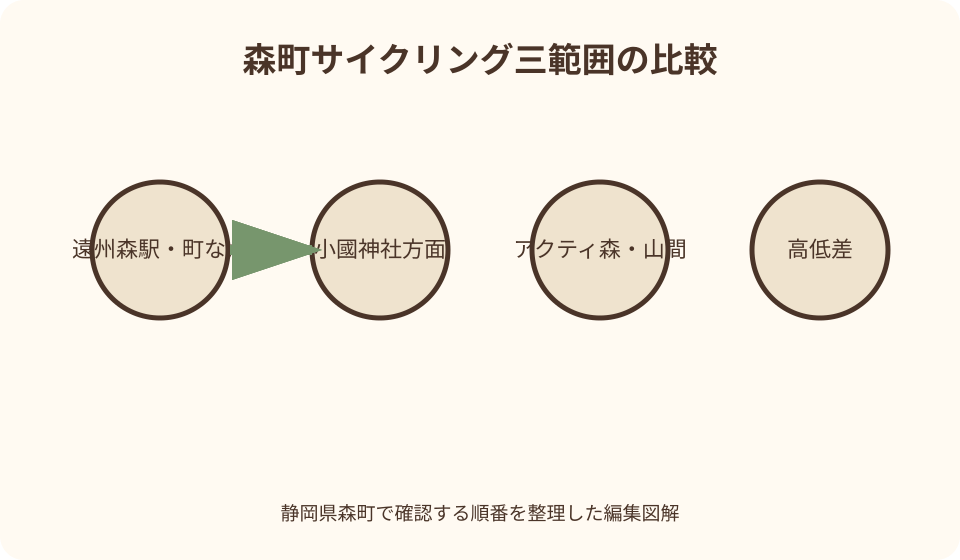
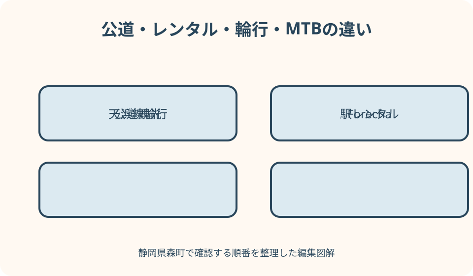

サイクリング・レンタサイクル｜最終確認 2026-08-10
静岡県森町のサイクリング｜町なか・小國神社・アクティ森の走り方
静岡県森町のサイクリングは、遠州森駅周辺の町並みを短く回る走り方と、小國神社へ向かう走り方、アクティ森を起点に大洞院や山間部を巡る走り方で条件が変わります。観光協会は五つのモデルコースと電動アシスト車を案内していますが、距離や紹介時間だけでは、高低差、交通量、トンネル、補給、帰りの電池残量まで分かりません。公道サイクリングとアクティ森の専用MTBパークも別の活動として準備します。

編集イラスト森町の自転車旅を三つの範囲に分ける
第一は遠州森駅、戸綿、役場周辺など町なかを中心にする範囲です。比較的短く組みやすくても、生活道路、交差点、歩行者、駐車車両へ注意します。
第二は遠州森駅側から小國神社や花の寺院へ向かう範囲です。目的地の混雑期、坂道、往復距離、駐輪、帰りの体力を町なかとは別に見ます。
第三はアクティ森を起点に大洞院、太田川ダム方面など山側へ進む範囲です。起伏、補給、トンネル、通行止め、通信の確認項目が増えます。
観光協会の五コースは見どころを整理する入口です。紹介された一本を、道路工事や季節混雑まで含む固定ルートとして扱いません。
一日に三範囲をつなげるより、貸出・返却拠点を一つ決め、その周辺で一コースに絞るほうが、時間と電池の余裕を残せます。
初心者は町なかの短い往復から
遠州森駅のレンタサイクルは天浜線公式ページで車種、台数、受付、料金、返却条件を確認します。掲載内容は更新されるため本記事に時刻・料金を固定しません。
借りる前に、サドル高、ブレーキ、タイヤ、ライト、鍵、ヘルメット、操作方法を係員と確認します。電動車はアシスト切替と残量表示も聞きます。
最初の十分程度は駅から遠ざからず、発進、停止、曲がる、降りて押す動作を試します。合わない車体のまま小國神社や山側へ向かいません。
町なかでは、古い町並みを見るため急停止したり、道路中央で写真を撮ったりしません。駐輪可能な場所へ移って徒歩で見ます。
初心者の代案は距離を増やすことではありません。駅、町並み、営業確認した休憩先を結び、返却時間より十分早く戻る小さな往復です。
貸出時には、途中で予定を短縮した場合の返却場所が出発拠点と同じかも確認します。遠州森駅で借りた車体をアクティ森へ返せるなどと推測せず、乗捨て可否を契約条件で確かめます。
高低差は距離と別に読む
観光協会のコースページには走行距離と紹介上の走行時間がありますが、停止、参拝、食事、混雑、道の確認は別に加えます。
電動アシスト車でも、上りが続けば電池を使い、下りでは速度管理が必要です。『坂道らくらく』という紹介を残量不要や操作不要の意味にしません。
地図で最高地点だけを見るのではなく、細かな上り返し、橋、谷からの登りを確認します。往路が下りなら、帰路に上りが残ります。
観光協会の秋葉街道と神社仏閣コースはアクティ森発着で小國神社と大洞院を巡る約22キロメートルの案内です。短時間の町乗りとは分けます。
自分の車種、荷物、暑さ、向かい風で所要は変わります。平均速度を固定せず、途中で目的地を一つ外せる順番にします。

交通量・幅員・トンネルを地図で確認
ルート候補は、県道、町道、農道、林道を見分けます。地図アプリが自転車経路を出しても、通行可否や走りやすさを保証するものではありません。
大型車が通る区間、歩道のない狭路、見通しの悪いカーブ、橋を事前に洗い出します。景観写真だけでは交通量を判断できません。
山側の候補にトンネルがあれば、長さ、照明、路肩、通行規制、迂回の有無を道路管理者の情報で確かめ、前後でライトを点灯します。
トンネルや狭路に不安がある場合、歩道へ逃げればよいとは考えません。自転車通行可否を含む現地標識に従い、ルート自体を変更します。
交通量は曜日、通勤、行事、紅葉、初詣で変わります。古いストリート画像を当日の道路状況として使わず、町・県の規制と施設案内を確認します。
小國神社方面は混雑と駐輪を先に見る
小國神社へ向かう日は、神社公式の当日案内、祭事、紅葉、初詣、交通規制を確認します。自転車なら渋滞を通過できるという前提を置きません。
境内やことまち横丁周辺では、管理者が認めた駐輪場所を利用します。鳥居、参道、店先、車の区画へ独自に鍵を掛けません。
参拝中は自転車から離れるため、貸出車の施錠方法と鍵の管理を受付で聞きます。荷物やバッテリー付属品を置いたままにしません。
混雑時に歩行者が増えたら、乗ったまま間を抜けず、案内に従って降車・押し歩きまたは迂回します。撮影地点を探して進路を変えません。
帰りに上りや向かい風が残る可能性を考え、境内滞在を延ばす前に返却時刻と電池を確認します。食べ歩き時間を走行時間へ含めません。
アクティ森・山間部は補給地点を線で結ぶ
アクティ森発着なら、施設の営業、レンタル受付、返却、駐車、飲食・物販の当日状況を運営者へ確認します。町公式の古い施設紹介だけに頼りません。
山側では店、自動販売機、トイレ、自転車店が連続しない可能性があります。地図に見える店名を営業中の補給所と決めず、公式情報や電話で確認します。
水、行動食、現金、修理用品を、自分の距離・気温・車種に合わせます。電動車でも人の水分とエネルギーは自動で補われません。
太田川ダムや山と清流の景観を目的にしても、ダム周辺の散策案内を自転車専用路と誤認しません。標識と管理者の通行区分に従います。
補給先が休業、売切れ、現金のみ、混雑の場合に備え、途中で折り返せる地点を決めます。次の集落まで走れば何かあるという期待で進みません。

駐輪は施設ごとに確認
森町は町施設等へのサイクルラック設置を案内した実績がありますが、すべての観光地にラックがあるわけではありません。設置先と現況を確認します。
ラックの形状が自分の自転車、太いタイヤ、スタンドなし車、荷物に合うかは現地で確認し、無理に車輪やフレームを押し込みません。
寺社は参拝区域、店舗は客用スペース、駅は鉄道利用者の動線があります。壁、柵、文化財、案内板へワイヤーを掛けないようにします。
複数人の自転車で通路を塞がないよう、駐輪可能台数と場所を施設へ尋ねます。混雑時は訪問先を一つ減らす選択を用意します。
駐輪地点から見どころまで歩く靴も考えます。自転車用の靴で石段・砂利を無理に歩かず、参拝や散策の範囲を調整します。
天浜線の輪行とレンタルを混同しない
遠州森駅で自転車を借りるサービスと、自分の自転車を列車へ持ち込む輪行は別です。レンタル案内だけで車内持込み条件を判断しません。
天浜線公式には輪行バッグ貸出の案内がありますが、貸出駅、数量、予約、返却、列車内での扱いは事業者へ最新条件を確認します。
輪行では、自転車を規定どおり分解・収納できるか、袋のサイズ、駅構内の移動、乗降時間を事前に練習します。ホームで初めて作業しません。
混雑、イベント列車、運休、車両条件によって計画どおり乗れない場合を考えます。裸の自転車や不完全な袋で乗車を求めません。
帰りだけ列車へ逃げる計画を立てるなら、最寄駅、時刻、運賃、収納場所、体力を往路前に確認します。故障後に袋を探すのでは遅れます。
雨・暑さ・風を出発と帰路で確認
雨予報の日は、濡れた路面、白線、落葉、マンホール、下りの制動距離を考えます。降水量の独自基準で実施せず、管理者と気象情報を優先します。
山間部で頭上が晴れていても、上流の雨、雷、道路規制が別に出ることがあります。気象庁、森町防災、県道路情報を重ねます。
暑い日は日陰の写真に惑わされず、町なかの照返しと坂の負荷を考えます。給水ができる確認済み地点を増やし、昼の山側を外す案を持ちます。
風は往路と復路で負担を変えます。追い風で遠くまで進んだ後の向かい風を考え、折返し時刻を早めに置きます。
天候が変わったら、雨宿りのためトンネル内や狭い橋で停車しません。管理者が認める施設へ戻るか、走行前に決めた退避先へ移ります。
通行止めは道路管理者ごとに調べる
森町公式の防災情報から県道路通行規制へ進み、町管理の林道は森町の林道規制ページで確認します。一覧にない道路を通行可能と即断しません。
崩落、工事、行事、冠水、倒木では規制の範囲と対象が違います。自転車だけ通れると標識・管理者が明示しない限り、車両規制を抜けません。
規制地点の直前で地図アプリが細い迂回路を出しても、私道、農道、未舗装路かもしれません。元の確認済み道路へ戻ります。
町民の森など施設全体の利用規制がある場所は、遊歩道だけでなく周辺の自転車立入可否を管理者へ確認します。古いコース図を優先しません。
出発時に規制がなくても、強雨や事故で変わる場合があります。山側へ入る前と折返し前に再確認し、通信不能なら遠方へ進みません。
故障・電池不足・疲労の撤退を決める
パンク等の故障時に、貸出車を自分で修理してよいか、回収や連絡はどうするかを受付で聞きます。契約条件を見ず部品を外しません。
電動車は出発時残量だけでなく、上り後、折返し、返却までの三地点で確認します。表示があることを航続距離の確約と扱いません。
膝、手、首の痛み、暑さ、集中力低下が出たら目的地を削ります。下りなら楽に戻れると考えず、速度を管理できる余力を残します。
撤退先は、貸出拠点、確認済みの駅、営業中の施設から選びます。タクシーが自転車を必ず積めるとは限らないため、必要なら事前に事業者へ相談します。
日没、ライト不良、スマートフォンの電池不足が重なったら、撮影や買物を追加しません。最短ではなく、明るく確認済みの道で戻ります。
公道サイクリングとMTB施設を分ける
アクティ森には2026年にマウンテンバイクパークForechaが整備され、町公式は超初級から上級まで五コース、車体・装具のレンタルを案内しています。
Forechaは管理された施設内のパンプトラック等を走る体験です。遠州森駅から観光地を巡る公道レンタサイクルと、受付・規則・車種・技術が同じではありません。
鍛治島地区の古道トレイルは町公式案内で中級から上級者向けとされています。一般観光客が公道用電動車で自由に入れる道とは読みません。
MTB施設を利用する日は、営業、予約、対象年齢・身長、装具、コース開放、雨天中止、指導の有無を運営者へ確認します。
専用施設で走った後に山間公道を追加すると、疲労と返却時間が重なります。MTB体験の日と観光サイクリングの日を分ける案が現実的です。
施設内ではコース難度表示、進行方向、待機場所、追越し、保護具に関する現地ルールを受付で聞きます。超初級という名称も、転倒しないことや保護具不要を示すものではありません。
良い点
森町観光協会が遠州森駅発着とアクティ森発着の五コースを示しているため、貸出拠点と見どころを組み合わせて比較できます。
遠州森駅とアクティ森でレンタサイクルの窓口が案内され、一般車、電動アシスト、E-BIKEなど車種を選ぶ入口があります。
町はサイクルラックの設置、アクティ森のMTBパーク、林道規制、防災情報を別々に公開しており、魅力と運用条件を公式資料で照合できます。
天浜線と組み合わせれば自家用車なしの起点を作れます。レンタルと輪行を分けて確認することで、体力や機材に合う来訪方法を選べます。
注文したい点
各モデルコースに累積標高、急坂、交通量の多い区間、歩道のない狭路、トンネル、給水・トイレを統一表示すると、距離以外の負担を比較しやすくなります。
レンタサイクルページで、貸出拠点ごとの車種、サイズ、予約、返却、故障連絡、雨天対応を更新日付きで一表にまとめると確認漏れを減らせます。
観光コース地図から県・町の道路規制、工事、行事交通規制へ直接移れる導線があれば、古いルート画像だけで山側へ入る行動を防げます。
寺社、駅、飲食店、公共施設のサイクルラック位置と利用条件を地図化すれば、文化財や歩行者動線へ不適切に施錠する問題が減ります。
天浜線の輪行は、袋の仕様、貸出駅、対象列車、混雑時の扱いを一つの最新ページへ集約すると、レンタルとの混同を避けられます。
代案・結論
結論は、町なか、小國神社、アクティ森・山間部を分け、距離、高低差、道路、補給、駐輪、返却、天候、規制、撤退を一コースずつ確認することです。
初回は遠州森駅周辺の短い往復、次回は小國神社またはアクティ森側の一方面にします。観光協会の五コースを一日でつなぎません。
輪行するなら天浜線へ最新条件を確認し、収納を事前練習します。条件が合わなければ遠州森駅で借りて同じ場所へ返す方法へ替えます。
雨、暑さ、通行止め、混雑、電池不足、故障があれば、未確認の農道・林道へ逃げず、貸出拠点へ戻るか公的に確認できた交通へ切り替えます。
大石の視点
私はサイクリングマップを、走れるという証明ではなく、確認すべき道路を並べた下書きとして使います。現況は道路管理者と施設へ戻って確かめます。
森町は町並みから神社、田園、山と清流へ景色が早く変わります。その魅力が、車種や装備を変えず遠くへ進み過ぎる原因にもなります。
電動アシストは坂を消す道具ではありません。電池、重量、下り、返却時間まで含め、行ける距離より戻れる距離を基準にします。
MTBパーク、古道トレイル、公道観光は、それぞれ別のルールと技術を要します。自転車という一語で同じ遊びにまとめないことが大切です。
一日一方面、見どころ二つ、補給一つ、早めの帰着。この小さな設計なら、森町の店や寺社で自転車を降りて過ごす余白も残ります。
公式情報・確認先
掲載内容は次の一次情報を基礎に整理しました。営業、料金、催し、交通は変わるため、出発前または手続き前にリンク先で最新情報を確認してください。
- 観光（静岡県森町、2026-08-10確認）
- 森町観光協会レンタサイクルのリニューアルについて（静岡県森町、2026-08-10確認）
- 森町体験の里アクティ森リニューアルオープンについて（静岡県森町、2026-08-10確認）
- 林道通行規制情報について（静岡県森町、2026-08-10確認）
- 防災情報（静岡県森町、2026-08-10確認）
- 森町地域公共交通法定計画（静岡県森町、2026-08-10確認）
- 森町サイクリング（静岡県森町観光協会、2026-08-10確認）
- 秋葉街道と神社仏閣コース（静岡県森町観光協会、2026-08-10確認）
- レンタサイクル（天竜浜名湖鉄道、2026-08-10確認）
- 天浜線公式ホーム（天竜浜名湖鉄道、2026-08-10確認）